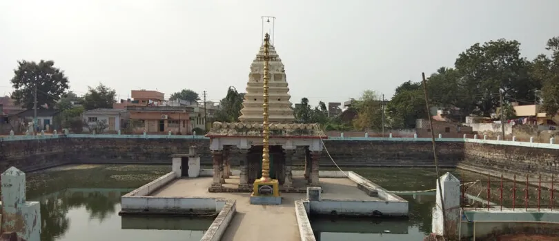
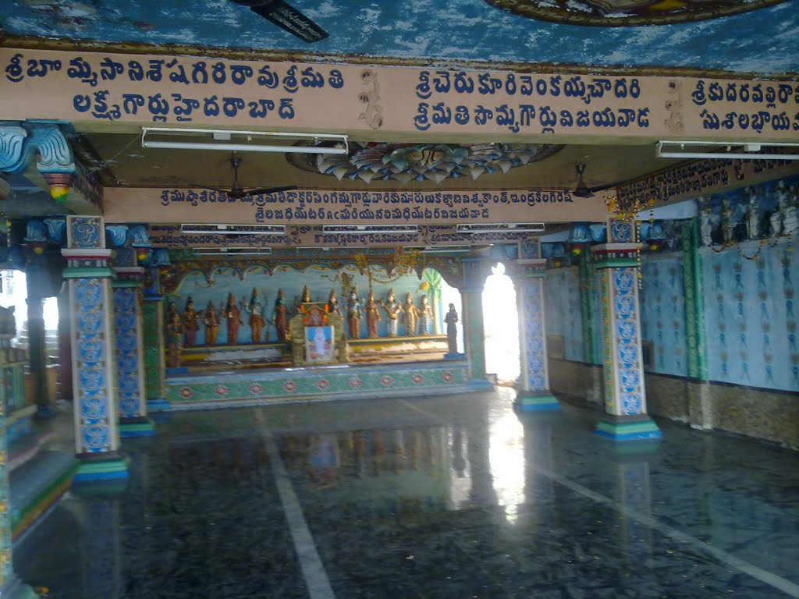

Darshan Timings
Confirm the current opening hours with the temple before travelling.

SACRED PLACES · VIJAYAWADA
A peaceful spiritual destination dedicated to Lord Subrahmanya.
Explore Temple ↓Subrahmanya Swamy is worshipped as the divine son of Lord Shiva and Goddess Parvati. Devotees visit temples dedicated to him to offer prayers and seek blessings.
If you're planning to visit this temple in Vijayawada, enjoy a peaceful spiritual experience and learn about the traditions associated with Lord Subrahmanya.
Confirm the current opening hours with the temple before travelling.
Dress respectfully, follow temple rules and maintain a peaceful atmosphere.
Vijayawada, Andhra Pradesh. Confirm the exact temple address before your visit.

Take time to offer prayers, appreciate the temple's spiritual atmosphere and experience the devotion that makes temple visits meaningful.
← Explore more templesDISCOVER THE SPIRITUAL SIDE OF VIJAYAWADA